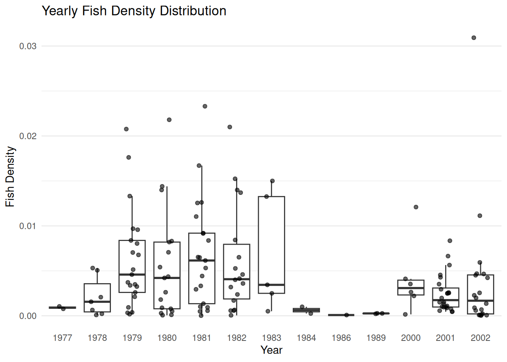

Analyzing Temporal Factors Influencing Fish Concentration - Using R and Python
Author
Yingwen
Published
September 21, 2026
Data Source
The data used in this post comes from the fishing dataset in the COUNT package on CRAN. It contains data detailing fish catching data such as site number, fish density and so on.
import pandas as pd# Load dataset from CRAN source repositoryurl ="https://raw.githubusercontent.com/vincentarelbundock/Rdatasets/master/csv/COUNT/fishing.csv"fishing = pd.read_csv(url)# Display initial rowsfishing.head()
Evaluating aggregate annual density yields no clear directional trend. Next, we aggregate density by individual observation period to assess intra-annual patterns.
Grouping by period reveals a pronounced downward trajectory in fish density over time. To better evaluate why annual averages mask this trend, we generate a figure comparing yearly density values.
# Convert year to factor so ggplot treats it as categorical discrete groups on the x-axisggplot(py$fishing, aes(x =factor(year), y = density)) +geom_boxplot(outlier.shape =NA) +geom_jitter(width =0.2, alpha =0.6) +labs(title ="Yearly Fish Density Distribution",x ="Year",y ="Fish Density" ) +theme_minimal() +theme(panel.grid.major.x =element_blank())

What We Found
Analyzing @fig-yearly-density shows key insights into the temporal pattern of fish density across the dataset:
Inconsistent Sampling Volume: Data collection is heavily concentrated in 1978 to 1983 and 2000 to 2002. Years such as 1977, 1984, 1986, and 1989 contain very few observations, resulting in near-zero spread.
Higher Variability in early 1980s: Between 1979 and 1983, fish density exhibited high overall variance, with median values near 0.005 and frequent high-density peaks exceeding 0.02.